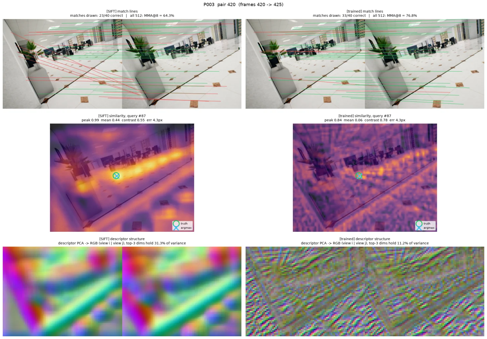

Visual pose research · Learned image matching
Learned Visual Pose
How much better can a robot estimate its motion if it learns which parts of two images correspond?
I derived the pose solver, built a renderer for training data, and trained a CNN for image matching. I’m now training Transformers to build and refine the pose graphs that connect those estimates.
Explore the research